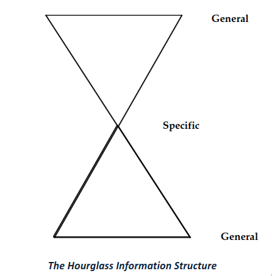

Hướng dẫn cách đọc (sách, tài liệu, hay bất cứ thứ gì để học)
Chúng ta thường có cảm giác “đã” khi đọc một cuốn sách từ đầu đến cuối, theo đúng thứ tự. Với tiểu thuyết thì phải đọc vậy vì bạn sẽ để cho tác giả dẫn dắt mình qua từng chi tiết trong cả cuốn sách.
Nhưng phần lớn những gì bạn sẽ phải đọc trong suốt thời sinh viên – và có thể cả trong sự nghiệp sau này – lại không phải là tiểu thuyết. Mà là sách học, tài liệu, giáo trình, báo cáo nghiên cứu, bài viết học thuật v.v...
Với những loại đó, mục tiêu của bạn là nắm bắt và ghi nhớ thông tin. Bạn cần biết “nó nói gì” càng nhanh và càng dễ hiểu càng tốt. Vì vậy – trừ khi bạn đang ở tù và chẳng còn việc gì để làm – đừng bao giờ đọc một cuốn sách phi hư cấu từ đầu đến cuối như thể đang đọc truyện.
Thay vào đó, khi đọc để học, bạn phải biết nhảy cóc, đảo ngược, lướt nhanh hay tua chậm – miễn là giúp bạn phát hiện, hiểu và ghi nhớ nội dung cốt lõi. Làm vậy bạn sẽ tiết kiệm thời gian và thu hoạch được nhiều hơn.
Theo phương pháp này, bạn hoàn toàn có thể đọc hết một cuốn sách 300 trang chỉ trong 6 đến 8 tiếng. Tất nhiên, nếu có thêm thời gian thì bạn nên học sâu hơn. Nhưng thời gian thì có hạn.
Dưới đây là các chiến lược giúp bạn làm điều đó hiệu quả. Chúng không chỉ áp dụng cho sách, mà còn cho bất kỳ loại tài liệu phi hư cấu (non-fiction) nào – từ bài báo đến website.
Mục tiêu luôn là: Đọc hết tài liệu
Khi đọc để học, điều quan trọng nhất là hiểu được ý chính, luận điểm, bằng chứng và kết luận. Bạn không cần (và thực ra cũng không thể) nhớ mọi chi tiết nhỏ. Cái bạn cần là ghi nhớ và ghi lại các điểm mấu chốt. Khi cần tra lại chi tiết, bạn sẽ biết tìm ở đâu.
Bảng 1. Tóm lược các chiến lược và mẹo đọc
| Chiến lược | Lý do |
|---|---|
| Đọc toàn bộ | Hiểu tổng thể quan trọng hơn hiểu từng câu. Phải nắm được cấu trúc tổng thể của lập luận. |
| Xác định trước thời gian đọc | Khi biết mình có bao nhiêu thời gian, bạn sẽ phân bổ hợp lý và tránh lan man. |
| Đọc có mục tiêu, có chiến lược | Biết rõ “vì sao đọc” sẽ giúp bạn nhớ lâu hơn và thấy hứng thú hơn. |
| Đọc chủ động | Không nên thụ động đi theo tác giả. Hãy lướt qua, tìm kiếm, tra cứu, đánh dấu theo mục tiêu của mình. |
| Đọc ba lượt | Lượt 1 để nắm tổng thể. Lượt 2 để đi vào chi tiết. Lượt 3 để ghi chú và tóm tắt. |
| Tập trung vào phần nhiều thông tin | Mục lục, biểu đồ, tiêu đề, tranh ảnh… thường chứa nhiều thông tin hơn đoạn văn thông thường. |
| Ghi chú theo cách của bạn (PTML) | Tự ghi chú, đánh dấu để dễ học và dễ tra cứu sau này. |
| Tìm hiểu về tác giả và tổ chức | Biết người viết là ai, họ ở đâu, giúp bạn đánh giá sâu hơn về nội dung. |
| Biết bối cảnh học thuật | Sách không tự xuất hiện. Nó phản ứng lại các quan điểm, trào lưu, và các học giả khác. |
| Cho não nghỉ giữa chừng | Tạm ngừng giúp não xử lý và ghi nhớ sâu hơn. |
| Lặp lại và sử dụng nhiều hình thức | Đọc xong rồi nói lại, vẽ sơ đồ, viết ghi chú… sẽ giúp nhớ lâu và hiểu kỹ hơn. |
Luôn xác định trước thời gian bạn sẽ dành ra để đọc
Giả sử bạn chỉ có 6 tiếng để đọc, bạn sẽ dễ chia thời gian hơn và tránh bị cuốn theo từng chi tiết nhỏ. Khi bạn chấp nhận giới hạn thực tế của mình, bạn sẽ tập trung hơn và hiệu quả hơn. Việc tự đặt thời gian và tuân thủ nó là một kỹ năng sống quan trọng.
Đừng bao giờ bắt đầu đọc mà không biết khi nào mình sẽ dừng.
Đọc phải có mục tiêu và chiến lược
Trước khi mở sách, hãy hỏi: mình đọc cuốn này để làm gì? Mình sẽ đọc thế nào? Nếu chỉ đọc vì giáo viên bảo đọc, mà bản thân không có mục tiêu riêng, bạn sẽ học rất ít.
Khi đọc, hãy tìm 4 điều đầu tiên:
- Ai là tác giả?
- Các luận điểm chính của sách là gì?
- Các luận cứ (Bằng chứng để chứng minh cho luận điểm) là gì?
- Kết luận của sách là gì?
Sau đó hãy tự hỏi tiếp:
- Những điểm yếu trong luận điểm hay luận cứ là gì?
- Bạn nghĩ gì về các luận điểm, luận cứ và kết luận trong cuốn sách?
- Để phản biện thì tác giả sẽ giải đáp các nhược điểm hay các phê bình từ bạn như thế nào?
Càng đọc, bạn càng nên quay lại các câu hỏi này. Khi kết thúc, bạn nên trả lời được hết. Bạn có thể thử tưởng tượng:
- Mình sẽ phải viết bài review sách cho một tạp chí.
- Mình sẽ phải tranh luận trực tiếp với tác giả.
- Phải thi liên quan đến cuốn sách đấy, thì bạn nghĩ những câu hỏi có trong đề sẽ là gì, và mình sẽ trả lời như thế nào?
Đọc chủ động
Đừng đợi tác giả giải thích xong xuôi rồi mới hiểu. Ngay từ đầu, hãy đặt giả thuyết (Luận điểm chính của cuốn sách là...) hoặc đặt câu hỏi (“Làm sao tác giả biết điều đó?”). Ghi chú ngắn các giả thuyết và câu hỏi, sau đó tìm cách xác minh hoặc trả lời khi đọc tiếp.
Tìm hiểu về tác giả và tổ chức đứng sau
Biết ai viết cuốn sách giúp bạn đánh giá chất lượng và hiểu sâu hơn nội dung.
Tác giả là con người – có nền giáo dục, trải nghiệm, định kiến, điểm mạnh, điểm yếu... Họ cũng làm việc cho các tổ chức: trường đại học, công ty, chính phủ, báo chí... Mỗi tổ chức có giá trị, áp lực và tiêu chuẩn riêng – ảnh hưởng đến cả nội dung và cách trình bày.
Ví dụ: giáo sư đại học thường viết để được xét duyệt học hàm, họ phải đảm bảo chất lượng học thuật, đôi khi văn phong rất khô khan. Trong khi đó, nhà báo lại viết để hấp dẫn người đọc và chạy deadline, nên thường dễ đọc nhưng nguồn có thể không vững chắc.
Hãy hỏi: Tác giả là ai? Học giả, nhà báo, chuyên gia? Ai tài trợ cho công trình? Ai viết lời giới thiệu? Viết cho đối tượng nào? Viết vào thời điểm nào? Tại sao viết?
Khá nhiều câu trả lời cho các câu trên bạn có thể tìm thấy trong phần cảm ơn, tiểu sử tác giả, tài liệu tham khảo.
Biết bối cảnh học thuật
Biết tác giả là ai sẽ giúp bạn hiểu bối cảnh học thuật của cuốn sách – tức là “cuộc trò chuyện trí tuệ” mà cuốn sách đang tham gia. Nó đang đồng tình với ai? Phản bác ai? Dựa trên nền tảng học thuật nào?
Một cuốn sách học thuật thường là lời đáp lại những gì người khác từng viết. Hãy chú ý khi tác giả nói kiểu: “Thông thường người ta tin rằng X, nhưng tôi sẽ chứng minh rằng Y.” (Vậy X có thực sự là quan điểm phổ biến không? Ai tin X?) Hoặc: “Tiến sĩ Jane nói rằng X, nhưng tôi thì nghĩ Y.” (Jane là ai? Mọi người tin Jane vì lý do gì? Lập luận của tác giả có thật sự thuyết phục?). Cũng quan trọng không kém là những người mà tác giả trích dẫn để củng cố quan điểm của mình.
Đọc một cuốn sách ba lần
Đây là kỹ thuật then chốt. Bạn sẽ hiểu và tận dụng tối đa một cuốn sách nếu bạn đọc nó ba lần — mỗi lần với một mục đích khác nhau.
Lần 1: Khảo sát – để khám phá (5–10% tổng thời gian)
Lần đọc đầu tiên rất nhanh, bạn chỉ lướt để nắm cái nhìn tổng thể: tác giả đang nói gì, viết theo kiểu gì, và muốn đi đến đâu.
Bạn không cần đọc kỹ, chỉ đánh dấu lại những tiêu đề, đoạn văn, hay cụm từ có vẻ quan trọng để quay lại sau. Cũng nên ghi ra vài câu hỏi để làm rõ khi đọc lần hai, ví dụ: “Thuật ngữ X nghĩa là gì?”, “Sao không nhắc đến chủ đề Y?”, hay “Z là ai?”
Lần 2: Đọc kỹ – để hiểu (70–80% tổng thời gian)
Lần này bạn đọc thật sự nghiêm túc để nắm rõ các luận điểm chính và cách tác giả chứng minh chúng.
Tập trung vào phần đầu và cuối của chương, cũng như các đoạn bạn đã đánh dấu ở lần một. Cố gắng trả lời các câu hỏi bạn đã tự đặt ra.
Lần 3: Ghi chú – để nhớ và hệ thống lại (10–20% tổng thời gian)
Mục tiêu lần đọc cuối cùng là ghi nhớ những điều quan trọng. Ghi chú ngắn gọn lại các lập luận, bằng chứng, kết luận — bằng chính lời của bạn. Việc copy nguyên văn ít giúp bạn hiểu bằng việc tự tóm tắt ngắn gọn.
Một chỉ tiêu tốt là: cứ 100 trang sách thì nên có khoảng 1–3 trang ghi chú. Nhiều quá cũng không giúp ích gì thêm. Nhớ đánh dấu số trang để dễ tra cứu lại. Bạn có thể ghi tay, gõ máy, hay kẹp giấy vào sách đều được — miễn là dễ tìm lại sau này.
Một cách rất hay (tôi thường dùng) là nhập luôn ghi chú vào phần "ghi chú" của phần mềm quản lý trích dẫn như Endnote, Zotero hay Bookends.
Thời gian và nhịp đọc
Con người không thể tập trung lâu. Bạn sẽ hiểu sâu hơn nếu đọc ba lần mỗi lần 1 tiếng, hơn là cố ngồi liền 3 tiếng liên tục. Nhưng nhớ: để có được 1 tiếng đọc hiệu quả, bạn cần ít nhất 1 tiếng 15 phút — vì đầu buổi sẽ bị phân tâm một chút, và cuối buổi cũng cần thời gian để “thoát” ra chuẩn bị làm việc khác.
Lập kế hoạch cụ thể. Ví dụ, với một cuốn 250 trang, tôi có thể dành 15 phút để lướt sơ, 4 tiếng đọc kỹ, và 20–30 phút ghi chú — tất nhiên điều chỉnh tuỳ độ khó, mức độ quan trọng và quỹ thời gian.
Tập trung vào phần “đậm đặc thông tin”
Sách phi hư cấu thường viết theo mô hình “chiếc đồng hồ cát”: mở đầu và kết thúc chứa thông tin khái quát, còn phần giữa là chi tiết. Mô hình này lặp lại ở nhiều cấp độ:
- Toàn bộ sách (mở đầu, kết luận)
- Mỗi chương
- Mỗi phần trong chương
- Mỗi đoạn văn

Bạn nên tập trung lần lượt vào:
- Bìa trước, bìa sau, mặt trong bìa
- Mục lục
- Mục lục tra cứu (index)
- Danh mục tài liệu tham khảo
- Lời mở đầu, giới thiệu, tóm tắt
- Kết luận
- Hình vẽ, bảng biểu
- Mở đầu và kết thúc chương
- Tiêu đề các mục nhỏ
- Chữ in đậm, in nghiêng, danh sách gạch đầu dòng
Dùng PTML – “Ngôn ngữ đánh dấu cá nhân” (personal text markup language)
Luôn luôn luôn đánh dấu khi đọc. Đừng chờ đến khi hiểu rõ rồi mới đánh dấu — hãy làm ngay từ lần đầu tiên. Những đánh dấu ban đầu sẽ giúp bạn tiết kiệm rất nhiều công sức khi đọc lại.
Đừng đánh dấu quá nhiều — sẽ phản tác dụng. Nên chỉ chọn 2–3 điểm ngắn gọn mỗi trang. Chỉ gạch dưới vài từ/cụm từ đủ để nhắc bạn nhớ đoạn nói gì. Viết chú thích bên lề bằng chính lời của bạn, mô tả đoạn văn đang nói gì.
Giấy vs. Màn hình
Bản in có độ phân giải cao gấp nhiều lần màn hình máy tính (600 dpi so với 100 dpi). Do đó, đọc sách giấy sẽ chính xác hơn và đỡ mỏi mắt hơn.
Việc đánh dấu trên màn hình vẫn còn bất tiện: thao tác nhiều bước, dễ bị xao nhãng vì email hay mạng xã hội, và hay quên mất việc xem lại ghi chú vì phải click mới hiện ra.

Các phần mềm như Acrobat, Apple Preview, PDFpen, iAnnotate, Goodreader hay Kindle đều có chức năng đánh dấu, highlight và ghi chú. Một số còn cho phép xuất riêng phần highlight để bạn dễ lưu trữ và tra cứu. Bạn có thể dán vào phần “ghi chú” của trình quản lý tài liệu để sau này tra lại nhanh chóng.
Khi ghi chú (khác với đánh dấu), bạn rất dễ bị cám dỗ "copy-paste" nguyên văn. Việc này có thể hữu ích nếu bạn muốn trích dẫn sau này, nhưng thường phản tác dụng nếu mục tiêu là hiểu và nhớ, vì bạn không tự xử lý lại thông tin.
Dùng phần mềm quản lý tài liệu (citation manager)
Không thể nhấn mạnh đủ tầm quan trọng của các công cụ như Endnote, Zotero, Mendeley, Bookends... Chúng giúp bạn lưu trữ, tìm kiếm và trích dẫn tài liệu rất nhanh chóng — không còn mất thời gian “tự tay format” nữa.
Một số công cụ còn có thể:
- Tự động lấy thông tin trích dẫn từ web
- Gắn link nguồn, tìm mã DOI
- Tìm kiếm trực tiếp từ giao diện phần mềm
- Đổi tên file tài liệu theo kiểu “Tác giả – Năm – Tên”
Tuy mỗi phần mềm có điểm mạnh yếu khác nhau, bạn nên chọn loại hỗ trợ đa dạng định dạng tài liệu (sách, bài báo, website, phỏng vấn, v.v.), không chỉ PDF.
Nếu bạn dùng phần “ghi chú” trong phần mềm một cách có tổ chức, thì dù thư viện của bạn có hàng nghìn đầu sách, bạn vẫn dễ dàng tra cứu lại.
Tận dụng tiềm thức
Rất nhiều quá trình xử lý thông tin diễn ra khi bạn không để ý. Giống như viết lách hay bất kỳ công việc sáng tạo nào, việc hiểu một cuốn sách cần thời gian.
Càng đọc lâu liền mạch, bạn càng nhanh mệt và dễ quên. Do đó, nên chia thành nhiều buổi đọc ngắn (1–2 giờ) thay vì đọc một lèo cả ngày.
Giữa các buổi đọc, bộ não sẽ “ngầm” xử lý nội dung. Khi quay lại, hãy tự hỏi: “Mình còn nhớ gì?”, “Ấn tượng điều gì?”, “Còn điều gì chưa hiểu?”
Ôn luyện và đa dạng cách tiếp cận
Đọc sách cũng giống như võ thuật, chơi bóng, hay nấu ăn — muốn nhớ thì phải luyện. Sau khi đọc xong, bạn cần “ôn tập”: tự kiểm tra, tranh luận với tác giả, tưởng tượng mình phải bảo vệ lập luận ấy ra sao.
Các hình thức tiếp nhận khác nhau (đọc, viết, nói, nghe, hình dung) sẽ kích hoạt các vùng não khác nhau — nên cách học tốt nhất là phối hợp nhiều cách. Đừng chỉ “ngẫm nghĩ trong đầu”, hãy:
- Trò chuyện với người khác về sách
- Đem sách ra thảo luận trong lớp
- Viết lại ý chính
- Vẽ sơ đồ, hình ảnh hóa nội dung
Tất cả đều giúp bạn ghi nhớ và kết nối kiến thức mới với nền tảng cũ.
Chờ chút nào bạn ơi!
Khi tôi trình bày những ý tưởng này, nhiều sinh viên thường nói với tôi vài tuần sau rằng họ "đã thử vài lần nhưng không làm được", nên cuối cùng bỏ cuộc.
Bạn sẽ cần phải luyện tập những kỹ thuật này trong một khoảng thời gian đáng kể — ít nhất là vài tháng — trước khi chúng trở nên tự nhiên. Và chúng sẽ không bao giờ dễ dàng hơn so với cách đọc thụ động, thoải mái mà chúng ta đã quen suốt bao năm qua.
Nhưng phần thưởng mà các kỹ thuật này mang lại là rất lớn — ít nhất đó là điều mà hàng trăm sinh viên đã nói với tôi sau nhiều năm. Học cách đọc như thế này có thể là chìa khóa quan trọng giúp bạn thành công trong học tập, nghiên cứu hay bất kỳ lĩnh vực chuyên môn nào.
Nguồn
Nguồn How to Read a Book, v5.0. Bản dịch dưới đây đã được dịch máy và đang được soát lại.